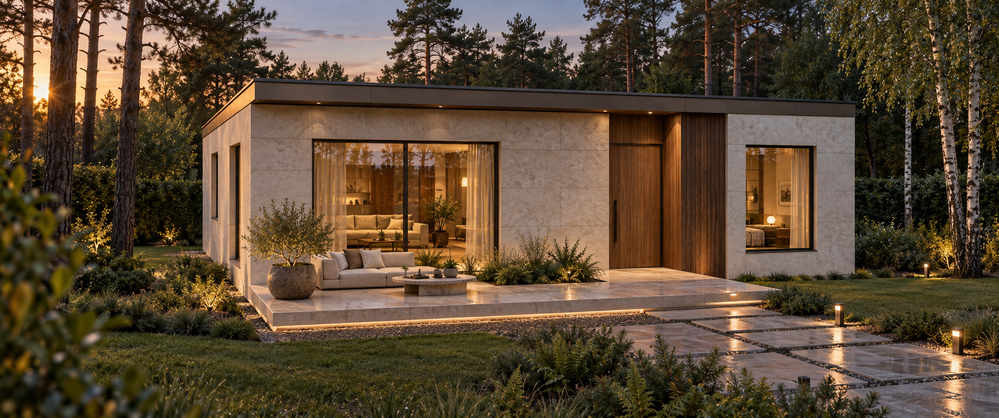
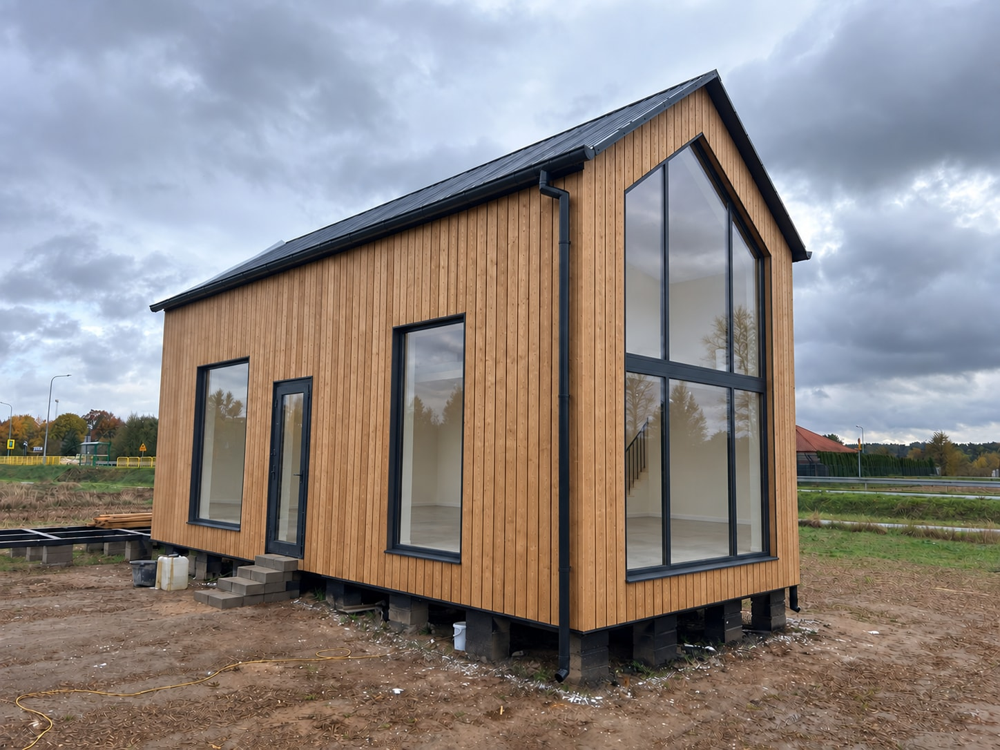
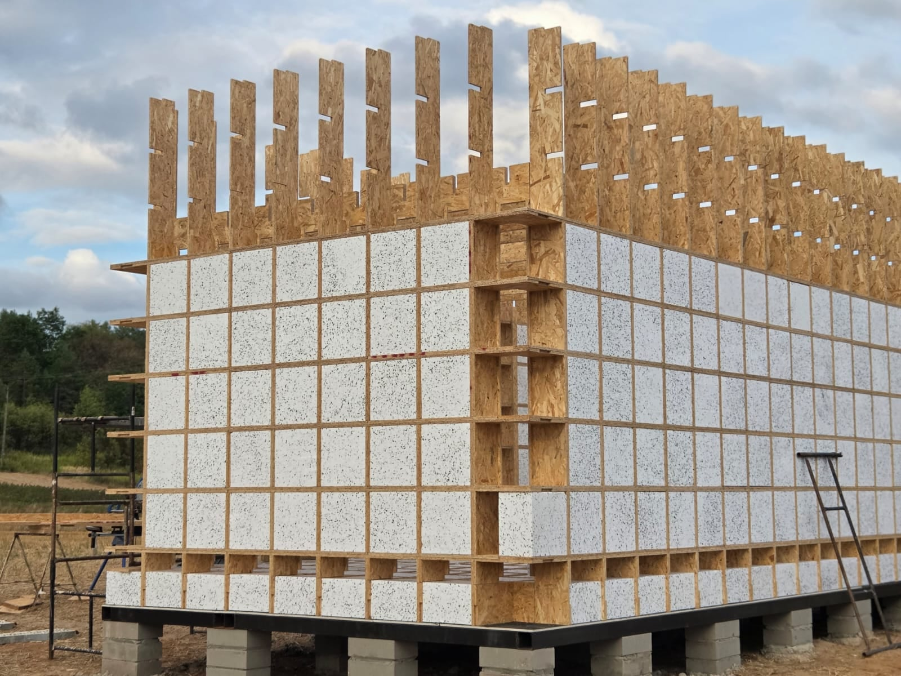

Pasywny w standardzie.
Kostki izolacji wypełniają komory podłogi, ścian zewnętrznych i dachu. Niskie U oznacza, że przez ocieploną przegrodę przenika mniej ciepła.
U < 0,10 W/(m²·K)
Współczynnik przenikania ciepła
Zapomnij o betonie i budowie ciągnącej się miesiącami. Z Combstruct zbudujesz dom prościej, szybciej i taniej. Bez niepotrzebnego stresu.
Podłoga, ściany i dach powstają z jednego powtarzalnego elementu — deski grzebieniowej — podstawy systemu Combstruct®. Wybierz etap i obróć model, żeby zobaczyć, jak łączymy elementy i gdzie umieszczamy izolację.
Gotowe połączenia ograniczają pracę przy przygotowaniu elementów na budowie. Komory konstrukcji służą jednocześnie do umieszczenia izolacji.
Kostki izolacji wypełniają komory podłogi, ścian zewnętrznych i dachu. Niskie U oznacza, że przez ocieploną przegrodę przenika mniej ciepła.
Wpusty wycinamy przed dostawą. Na budowie składamy przygotowane deski według projektu, powtarzając ten sam sposób łączenia.
Combstruct w praktyce
Jedna konstrukcja, wiele możliwości wykończenia. Zobacz, jak powstaje dom w systemie Combstruct — krok po kroku.
Zobacz zdjęcia z budowy

Materiały, bezpieczeństwo, trwałość i finansowanie. Odpowiedzi na pytania przed budową.
Porozmawiajmy o Twoim domuProjektujemy ochronę całej konstrukcji: przewidujemy okładziny o właściwościach ogniochronnych, które osłaniają rdzeń z OSB lub sklejki. Ochronę uzupełniają odpowiednie detale połączeń i przejść instalacyjnych. Według wyników naszych testów badane układy ścian, stropów i podłóg osiągają REI 60: zachowują nośność, szczelność i izolacyjność ogniową przez 60 minut w warunkach badania.
Konstrukcję osłaniamy warstwami ochronnymi. Przewidujemy płyty odporne na wilgoć, a w miejscach narażonych na wodę — odpowiednie uszczelnienia i hydroizolację. Ochrona obejmuje także styki płyt, obróbki oraz przejścia instalacyjne.
Dobieramy wysokiej jakości materiały i rozwiązania konstrukcyjne z myślą o użytkowaniu domu przez ponad 50 lat. Prawidłowy montaż, odpowiednia konserwacja i regularne przeglądy to podstawa zachowania jego trwałości na kolejne dekady.
Gwarancja Combstruct wynosi 30 lat. Szczegółowy zakres ochrony, warunki użytkowania i konserwacji oraz sposób zgłaszania wad określa dokument gwarancyjny dla wybranego wariantu. Przed zawarciem umowy należy sprawdzić, jakie elementy i prace obejmuje. Gwarancja nie ogranicza ustawowych praw klienta.
Finansowanie trzeba potwierdzić z wybranym bankiem przed zamówieniem. Bank ocenia kredytobiorcę, nieruchomość, dokumentację inwestycji i sposób zabezpieczenia kredytu. Warto przedstawić projekt, kosztorys oraz harmonogram płatności, zwłaszcza gdy zestaw materiałów opłaca się przed montażem. Nie deklarujemy automatycznej akceptacji Combstruct przez wszystkie banki.
Belka grzebieniowa, element konstrukcyjny i rdzeń nośny są opisane w międzynarodowym zgłoszeniu patentowym WO 2025/264131 A1. Publikacja zgłoszenia nie jest certyfikatem technicznym budynku. Deklaracje właściwości materiałów, obliczenia konstrukcji i klasyfikacje przegród dotyczą konkretnych produktów oraz rozwiązań — trzeba je sprawdzić dla wybranego projektu.
Zobacz zgłoszenie patentowe ↗Ten szacunek dotyczy montażu konstrukcji domu 120 m². Pełny harmonogram obejmuje też projekt, formalności, przygotowanie działki i pozostałe prace potrzebne do zamieszkania.
Tak. Powtarzalne są elementy konstrukcji, a układ pomieszczeń, bryłę i elewację dobieramy do konkretnego projektu. Liczbę sypialni, gabinet czy wyjście na taras planujemy z uwzględnieniem siatki konstrukcyjnej i warunków działki.
Zobacz dostępne projekty, porównaj układy pomieszczeń i wybierz wariant materiałów lub konstrukcji z montażem. Gdy znajdziesz dom dla siebie, porozmawiajmy o dopasowaniu go do Twojej działki i potrzeb.
Zobacz projekty i ceny